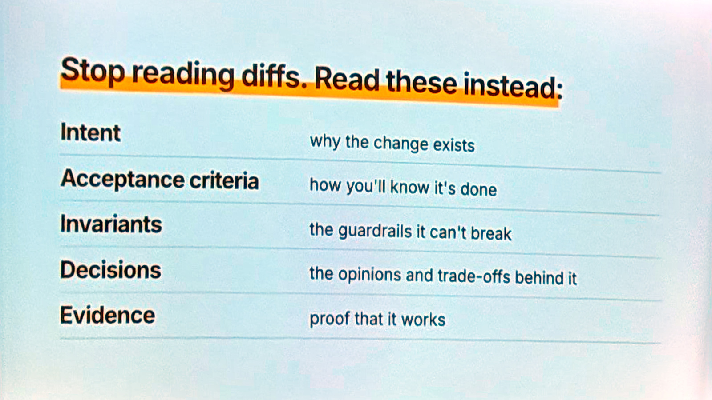

Tue, Nov 10Tue, Nov 10 · 9:30 AM–9:55 AM · Continental 1–3 (Workshop Room 1)
One team's path to trusting AI generated code
Ankit Jain, Aviator
Once AI writes most of the code, a team should stop reviewing diffs and instead capture intent, decisions and evidence, owning the rules that verify the code rather than the code itself.
23 min · 1 photo · 5 notes · 7/7 built